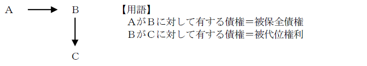
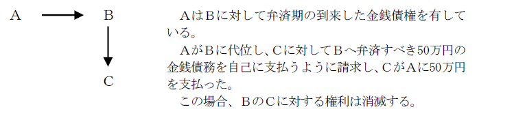

第４編 債権総論
第２章 責任財産の保全
第１節 債権者代位権（423条）
1. 意義
債権者は、自己の債権を保全するため必要があるときは、債務者に属する権利（以下「被代位権利」という。）を行使することができる（423条１項）。
ex．Ｂの債権者ＡがＢに代位してＢのＣに対する債権を行使する場合

2. 債権者の有する権利（被保全債権）
債権者は、その債権（被保全債権）が強制執行により実現することのできないものであるときは、被代位権利を行使することができない（423条３項）。
1. 対象となり得る権利（被代位権利）
責任財産を構成する権利のすべてである。
財産権であれば、債権・物権的請求権等の請求権であると、取消権・解除権等の形成権であるとを問わず、債権者代位の対象となる。
相殺の意思表示や消滅時効の援用（最判昭43.９.26）も代位行使できる。
債権者代位権の代位行使もできると解されている。
2. 対象となり得ない権利
債権者代位権は、将来の強制執行に備えて債務者の財産を保全するための制度であるから、強制執行できない債権を代位行使することはできない。
(1) 一身専属権（423条１項ただし書「債務者の一身に専属する権利」）
一身専属権には、特定の者にのみ帰属するという帰属上の一身専属権と、権利を行使するかどうかが権利者の個人的意思に委ねられなければならないという行使上の一身専属権がある。
債権者代位権で問題になる一身専属権とは、債務者のみが行使すべきことを意味するので、行使上の一身専属権である。
ex．扶養請求権（877条以下）
※ 慰謝料請求権は、行使するかしないかは債務者の意思にかかるから、行使上の一身専属権といえ、債権者代位権の対象ではない。ただし、いったん被害者が権利行使し、具体的な金額が確定すれば、その代位行使は可能である（最判昭58.10.６）。
＜判例＞ 最判平13.11.22
遺留分減殺（侵害額）請求権を債権者代位権の目的とすることの可否
・判旨
「遺留分減殺（現：侵害額）請求権は、遺留分権利者が、これを第三者に譲渡するなど、権利行使の確定的意思を有することを外部に表明したと認められる特段の事情がある場合を除き、債権者代位の目的とすることができないと解するのが相当である。」
(2) 差押えを禁じられた権利（423条１項ただし書） ex．民事執行法152条
共同担保となり得ず、責任財産とならないからである。
(3) 訴訟上の権利
(4) 債権譲渡の通知
①債権者の債権を保全するために必要であること（423条１項本文）、②債務者が権利行使しないこと、③原則として債権の履行期にあること（423条２項本文）、が必要である。
1. 債権を保全するために必要であること（要件①）
本条の本来の目的は、債務者の責任財産の減少を防止し、総債権者の共同担保を保全することにある。従って、債務者に対する不当な干渉を避けるため、(a)被保全債権は金銭債権であること、(b)代位権行使をしなければ債権者が自己の債権の満足を得られなくなるおそれがあること、すなわち、債務者が無資力であることを要するのが原則である（最判昭49.11.29）。
ただし、債権者代位の転用の場合は、債務者の無資力要件は不要である。
2. 債務者が権利行使しないこと（要件②）
債務者が権利行使したときは、たとえその行使が債権者に不利益であっても（不利益な代物弁済の承認等）、債権者はもはやその権利を代位行使できない。不当な干渉となるからである。
3. 原則として債権の履行期にあること（要件③）
(1) 原則
債権者代位権は本来、強制執行の準備手続を目的とするものであるから、強制執行が可能な状態にあること、すなわち債権の弁済期にあることが必要である（423条２項本文）。
(2) 例外－保存行為（423条２項ただし書）
保存行為とは、債務者の財産の現状を維持する行為である。
ex．時効の更新、未登記の権利の登記
保存行為は急速を要することが多く、また、これにつき弁済期前の代位行使を認めても債務者の不利益は少ないため例外とした。
1. 行使の方法
債権者は、自己の名で債務者の権利を行使する。
(1) 裁判上・裁判外の行使
詐害行為取消権と異なり、裁判上でも裁判外でも行使できる。
(2) 債務者への引渡し
権利行使の効果は債務者に帰属するため、債務者に対して履行せよと請求するのが原則である。しかし、債務者が受領しないと債権者代位権の行使が無意味なものになるため、被代位権利が金銭の支払又は動産の引渡しを目的とするものであるときは、相手方に対し、その支払又は引渡しを自己に対してすることを求めることができる（423条の３前段）。
※ 金銭債権の場合、債権者は受領した金銭の返還債務と自己の債権とを相殺することで事実上優先弁済を受けることができることになる。しかし、制度の不備で仕方がない。
(3) 登記移転請求を代位行使する場合
債務者名義に移転すべきことを請求することができるにとどまる。
2. 行使の範囲
被代位権利の目的が可分であるときは、自己の債権額の限度においてのみ、被代位権利を行使することができる（423条の２）。
対象となる権利が不可分の場合は全部について行使できる。
3. 行使の効果
(1) 債務者の取立てその他の処分権限等
債権者が被代位権利を行使した場合であっても、債務者は、被代位権利について、自ら取立てその他の処分をすることができる（423条の５前段）。つまり、代位債権者が債権者代位権を行使し、かつ第三債務者に対して直接の支払・引渡し請求をする場合であっても、債務者は、第三債務者に対して、被代位権利の履行を請求することができ、同履行を求める訴訟を提起することもできる。
債権者代位権は本来、債務者が権利行使をしない場合にその行使が認められているものであり、債務者の処分権限を制限するのは不当な干渉となるからである。
代位債権者が債務者の取立てその他の処分を禁止するには、被保全債権につき債務名義を得たうえで、第三債務者に対する債権（被代位権利）の差押えをする必要がある（民事執行法145条参照）。
(2) 相手方（第三債務者）の権限
債権者が被代位権利を行使した場合であっても、相手方（第三債務者）は、被代位権利について、債務者に対して履行をすることができる（423条の５後段）。
また、債権者が被代位権利を行使したときは、相手方は、債務者に対して主張することができる抗弁をもって、債権者に対抗することができる（423条の４）。
ex．Ｂの債権者ＡがＢに代位し、Ｂの債務者Ｃに対して被代位権利を行使した場合、Ｃは、Ｂに対して主張できること（弁済した等）をＡに対しても主張できる。
したがって、代位債権者が第三債務者による弁済を禁止するには、第三債務者に対する債務者の債権（被代位権利）に対して仮差押えをする必要がある（民事保全法50条参照）。
なお、債権者に対しての履行をした場合については下記（4）を参照。
(3) 訴訟告知
債権者代位訴訟を提起した債権者は、遅滞なく、債務者に対して訴訟告知をしなければならない（423条の６）。
その趣旨は、債権者代位訴訟を提起する代位債権者は法定訴訟担当の地位にあり（民訴法115条１項２号）、その判決の効力が債務者に及ぶことから、債務者に対する訴訟告知を代位債権者に義務付けることで、債権者代位訴訟における敗訴判決の効力が債務者の知らないところで当然に及ぶ事態を回避するためにある。
上記訴訟告知をしなかった場合の取扱いについて、明文の規定はない。しかし、訴訟告知義務を定めた上記趣旨からすれば、訴訟告知を欠いた債権者代位訴訟の訴えは却下されるべきと解される。
(4) 被代位権利の消滅
被代位権利が金銭の支払又は動産の引渡しを目的とする場合であって、債権者が相手方に対し、自己に対して履行することを請求し、相手方が債権者に対してその履行をしたときは、被代位権利は、これによって消滅する（423条の３）。

1. 転用
債権者代位権は、本来、責任財産保全のための制度であるから、被保全債権は金銭債権に限られるのが原則である。しかし、特定債権保全のために代位権行使を転用することも認められている。
現行法では登記又は登録の請求権の保全のための債権者代位権のみが明文化されているが、他の債権者代位権の転用が否定されるわけではなく、解釈に委ねられている。
2. 債権者代位権の転用と債務者の無資力要件
債権者代位権の転用が認められる場合、債務者の無資力要件は不要である。将来の強制執行のための代位権行使ではないからである。
3. 転用の例
(1) 登記請求権の保全
登記又は登録をしなければ権利の得喪及び変更を第三者に対抗することができない財産を譲り受けた者は、その譲渡人が第三者に対して有する登記手続又は登録手続をすべきことを請求する権利を行使しないときは、その権利を行使することができる（423条の７前段）。
ex．Ａ→Ｂ→Ｃと不動産が譲渡されたが、登記がＡの下にある場合、ＣはＢに対する登記請求権を被保全債権として、ＢのＡに対する登記請求権を代位行使できる
423条の７にいう「登記又は登録しなければ権利の得喪及び変更を第三者に対抗することができない財産を譲り受けた者」とは、登記・登録の請求権を債務者に対して有している者を指す。
この場合においては、以下の規定の適用がある（423条の７後段、４3.参照）。
ⅰ 債務者の取立てその他の処分の権限等（423条の５）
ⅱ 相手方の抗弁（423条の４）
ⅲ 訴訟告知（423条の６）
(2) 賃借権の保全
ＡがＢから土地を賃借したが、その土地上に不法占拠者Ｃがいる場合、ＡはＢに対する賃借権を被保全債権として、ＢのＣに対する妨害排除請求権を代位行使できる（大判昭４.12.16）。なお、賃借人が不動産賃貸借の対抗要件を具備した場合、不動産賃借権に基づく妨害排除請求権及び返還請求権を有する（605条の４）。
(3) 共同相続人間の移転登記請求権の代位行使
不動産売主を相続したＡＢのうち、Ｂが移転登記に協力しない場合、Ａは、買主Ｃの有する同時履行の抗弁権を喪失させ、代金請求権を保全するため、ＣのＢに対する登記請求権を代位行使できる（最判昭50.３.６）。
この場合、被保全債権は金銭債権であるが、強制執行の準備のために行使するものではないので、転用の事例とされる（無資力要件が不要）。
(4) 妨害請求権の代位行使
賃借権が第三者によって妨害されたときに、賃借人が賃貸人の有する所有権に基づく妨害排除請求権を代位行使することができる。抵当権者は抵当権設定者である抵当物の所有者である物上保証人の有する妨害排除請求権を代位行使することができる（最大判平11.11.24）。物上保証人には抵当権者に対する担保保存義務があり、これを被保全債権としてこの代位権行使が認められるのである。